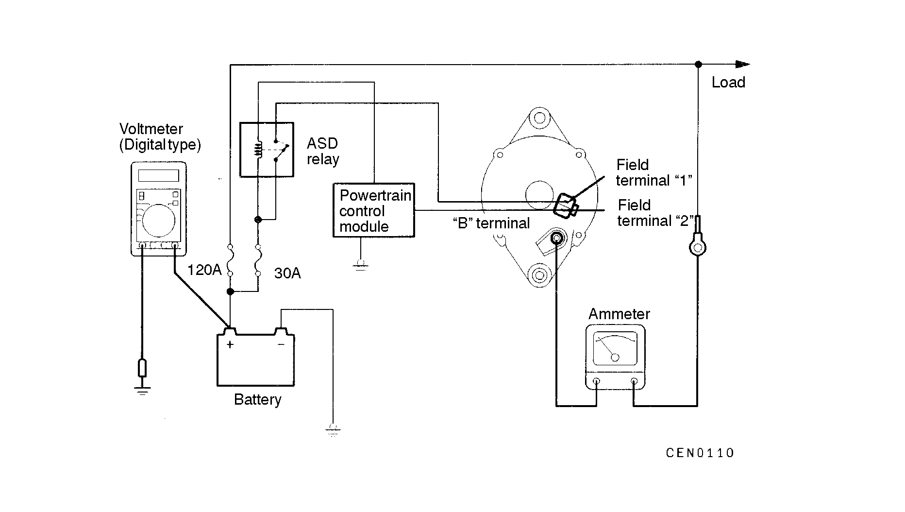

![[Previous]](https://mitsubishitechinfo.com/data/F24S/BUTTONS/fprevg.png)
![[Next]](https://mitsubishitechinfo.com/data/F24S/BUTTONS/fnextg.png)
REGULATED VOLTAGE TEST

This test determines if the powertrain control module is correctly controlling the generator output voltage.
(1)Before tesing, be sure to check the following:
•Generator installation and wiring connections
•Battery fully charged. (Refer to GROUP 54 - Battery.)
•Generator drive belt tension
(Refer to GROUP 00 - Maintenance Service.)
•Fusible link
•Abnormal noise from the generator while the engine is running
(2)Turn the ignition switch to the OFF position.
(3)Disconnect the negative battery cable.
(4)Connect a digital-type voltmeter between the battery (+) terminal and the ground. (Connect the (+) lead of the voltmeter to the battery (+) terminal. Connect the (-) lead of the voltmeter to a secure ground or to the battery (-) terminal.)
(5)Disconnect the generator output wire from the generator "B" terminal.
(6)Connect a DC test ammeter with a range of 0 - 100A in series between the "B" terminal and the disconnected output wire. (Connect the (+) lead of the ammeter to the "B" terminal. Connect the (-) lead of the ammeter to the disconnected output wire.)
(7)Reconnect the negative battery cable.
(8)Make sure all lights and accessories are off.
(9)Connect a tachometer and start the engine.
(10)Increase the engine speed to approx. 2,500 r/min.
(11)Read the voltmeter when the current output by the generator becomes 10 A or less.
(12)If the voltage reading conforms to the value in the voltage regulation table, the voltage regulator is operating normally.
If the voltage is not within the standard value, a malfunction of the voltage regulator or generator exists.
(13)After the test, lower the engine speed to idle speed.
(14)Turn the ignition switch to the "OFF" position.
(15)Disconnect the negative battery cable.
(16)Disconnect the ammeter, voltmeter, and tachometer.
(17)Connect the generator output wire to the generator "B" terminal.
(18)Connect the negative battery cable.
Voltage Regulation Table
|
Battery ambient temperature °C (°F) |
Standard value V |
| - 20 (-4) |
14.07 - 15.07 |
| 0 (32) |
13.89 - 14.89 |
| 20 (68) |
13.58 - 14.58 |
| 40 (104) |
13.15 - 14.15 |
| 62 (143.6) |
12.84 - 13.84 |
|